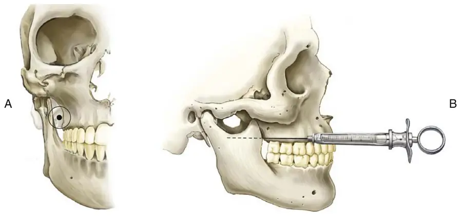
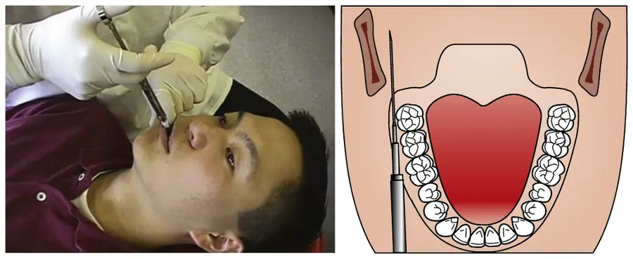

نسخه استخراجشده؛ ترجمه یا تأیید علمی انجام نشده است. وضعیت: captured
مردی ۲۸ ساله دیروز برای پالپیت برگشتناپذیر مولر دوم پایین چند بار بلاک عصب آلوئولار تحتانی (IANB) گرفته است. امروز با درد برگشته و دهانش را فقط به اندازهی یک بند انگشت باز میکند. IANB و گاو-گیتس ممکن نیست. چطور بیحسش میکنی؟

بلاک واَزیرانی-آکینوسی یا بلاک «دهان بسته» با دندانهای روی هم زده میشود. سوزن از کنار توبروزیتهی فک بالا وارد فضای پتریگومندیبولار میشود و دارو را کنار عصبهای آلوئولار تحتانی، لینگوال و میلوهایوئید میریزد؛ ارتفاع تزریق پایینتر از گاو-گیتس و بالاتر از IANB است.
فلج حرکتی همزمان یا زودتر از بیحسی حسی میآید و بیمار دچار تریسموس کمکم دهانش را بازتر میکند. بیحسی لب و زبان حدود ۱ تا ۱٫۵ دقیقه بعد شروع میشود و کار تا ۵ دقیقه شروعشدنی است. اگر دهان باز شد ولی بیحسی کافی نبود، IANB یا گاو-گیتس بزن.

اشتباه رایج: سوزن رو به داخل. راموس به بیرون باز میشود؛ اگر سوزن موازی آن نرود، داخلیتر از لیگامان اسفنوماندیبولار مینشیند و بلاک شکست میخورد. این خطا برای راستدست در سمت چپ شایعتر است. زیاد پیش بردن سوزن هم دارو را به پاروتید و عصب صورتی میرساند.